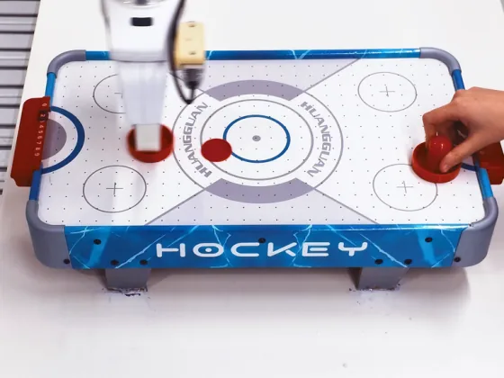
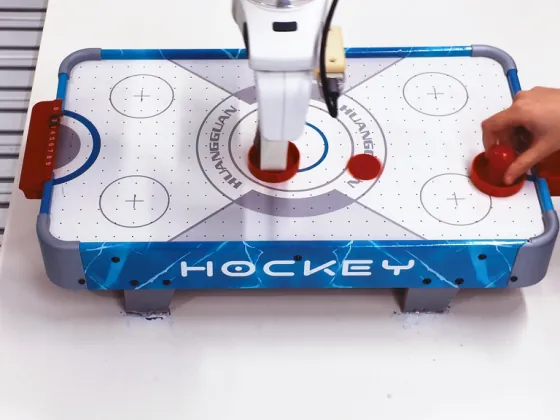
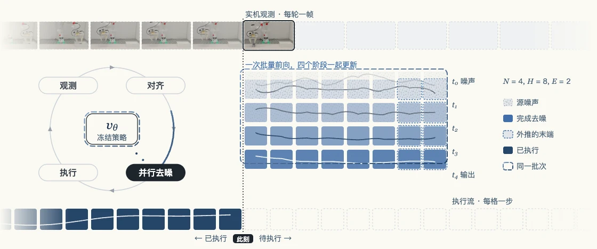
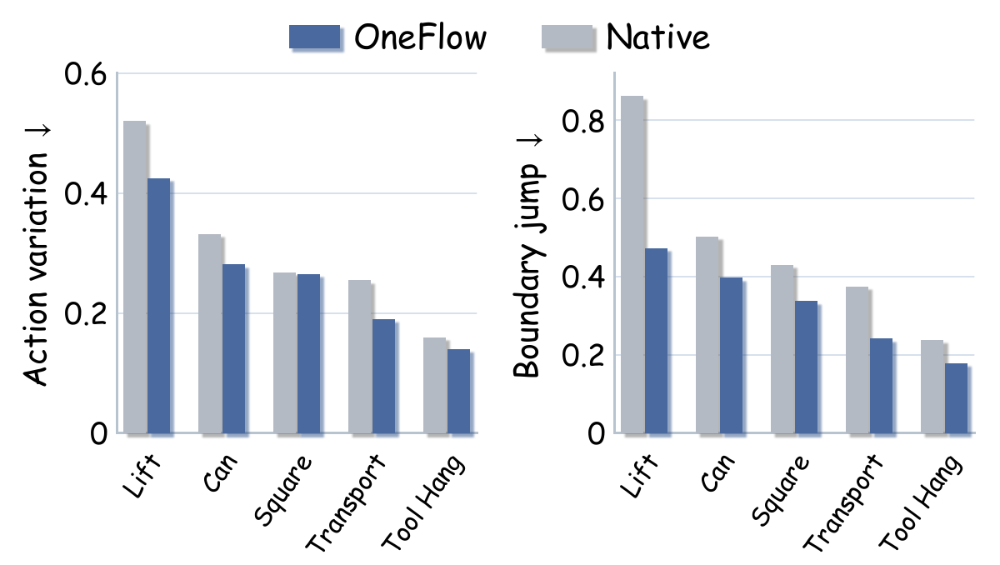
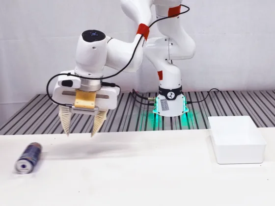
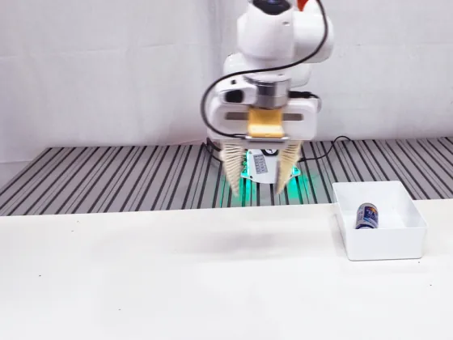
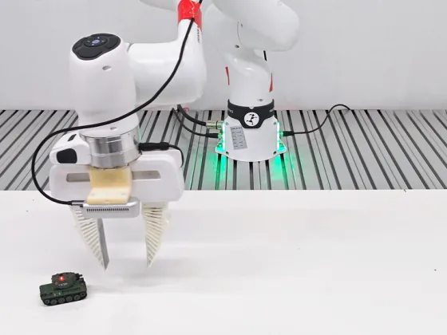
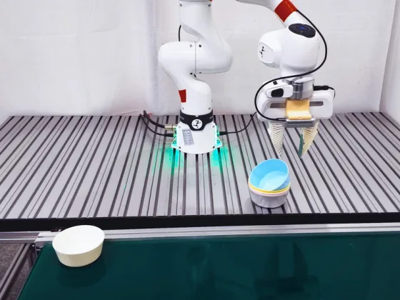

回击冰球：每次来球单独计分



每轮发 10 个球，机器人把球击回发球一侧才计入回击。每种方法共接 500 个来球，原生采样、OneFlow 和 OneFlow+ 的回击率分别为 6%、34% 和 66%。


六帧覆盖约三分之一秒。球拍在第三帧前后触球，随后冰球滑向对侧。
 机器人学习学术报告
机器人学习学术报告
能否在接近一次前向的时间里，
保留多步去噪的动作质量？
Parallelizing Flows for One-Pass Action Generation
引言00:00–05:30
从面向单一任务的流匹配策略，到视觉语言动作模型（VLA），再到同时预测未来画面和动作的世界动作模型（WAM），许多机器人策略都用迭代去噪生成一段动作。在原生采样中，每一步都用上一步更新后的动作估计来预测速度，网络调用只能首尾相接。
机器人要等这一串计算全部结束，才能根据本轮观测发出新动作。减少步数可以缩短等待，也可能降低任务成功率。物体还在移动、机械臂与物体的接触还在变化时，这段等待限制了机器人根据新观测修正动作的速度。
专用流策略面向单一任务VLA视觉语言动作模型WAM世界动作模型这三类模型都有采用迭代去噪的实例
一轮之内的网络调用，后一次要等前一次回合成功率
每个箭头形色块是一次网络调用，链条的长度就是机器人拿到新动作之前要等的调用次数。右侧是 Fast-WAM 在 50 项任务的标准和随机化场景中的平均成功率。调用次数不等于毫秒数，实测耗时还取决于硬件和实现，见实测耗时一节。
原生采样一轮之内，串行走完所有阶段
OneFlow初始化后，一轮内并行更新各阶段
已有方法主要从三个方向减少计算。它们对训练和推理的要求各不相同。
减少函数求值次数，直接缩短串行的调用链。
代价步数很少时，积分的离散化误差可能拉低任务成功率。
把多步采样学进少数几步。
代价需要针对具体策略做额外训练，优化过程也可能不稳定。
复用中间特征或动作状态，省去重复计算。
代价复用越激进，近似误差越限制进一步加速。
能否直接使用已有的预训练流策略，在一次前向传播的时延量级上，保留多步采样的动作质量？
可以把多个去噪阶段放进同一个批次并行计算。困难在于，如果每轮都从噪声开始解一条新轨迹，后面阶段需要的输入此时还不存在。即使并行估计这些输入，通常也要多轮网络调用来修正。
在滚动重规划中，如果每轮只执行预测窗口的前一部分，相邻两轮就共享一段未来的执行时刻。OneFlow 保留各去噪阶段的中间估计，下一轮把这些估计对齐到新窗口，再用最新观测并行更新。
方法05:30–15:30
把重规划轮次 k 和去噪阶段 i 当作两条时间轴分开看。原生采样在每一轮里沿 i 从头走到底。OneFlow 在稳态每轮同时更新所有去噪阶段，生成本轮可执行的动作块。沿一个阶段的更新向后追踪，它又会参与下一轮更低噪声阶段的重建。
机器人每轮预测未来 H 步动作，只执行前 E 步就重新观察。只要 E 小于 H，下一轮的窗口就和上一轮重叠 H − E 步。下面的示意取 H = 8、E = 2、N = 4。动作 9 在第 1 轮进入窗口时排在第 7 格，随后三轮依次前移到第 5、第 3、第 1 格，然后被执行。图中选取这四轮，追踪动作 9 从较高噪声到最终输出的一条更新路径。实际策略的去噪阶段数由采样设置决定。
物理时间：窗口每轮前移 2 格相邻两轮重叠 6 格，动作 9 在窗口里停留四轮
动作编号，也就是执行顺序 →
本轮执行本轮新进入窗口动作 9，深浅对应右图所选的去噪阶段
去噪时间：每轮各阶段只前进一步每一列是同一轮，对角线标出动作 9 的一条更新路径
| 第 1 轮o1 | 第 2 轮o2 | 第 3 轮o3 | 第 4 轮o4 | |
|---|---|---|---|---|
| 阶段 1 | 9 | |||
| 阶段 2 | 9 | |||
| 阶段 3 | 9 | |||
| 阶段 4 | 9 | |||
| 网络调用 | 1 次批量 | 1 次批量 | 1 次批量 | 1 次批量 |
竖着读右图的一列：四个阶段共用这一轮的观测，由一次批量调用同时更新。沿橙框的对角线读：动作 9 从进入窗口到排在队首，依次接受 o1 到 o4 四次观测的修正。较早的观测在高噪声阶段确定大致的计划，临近执行的观测完成最后的修正。图中只追踪一条信息传播路径，每一轮里动作 9 其实同时存在于四个噪声水平的候选中。
回合开始时流水线是空的，第一次规划仍然要用原生多步采样，并把沿途的状态保存下来。此后的每一轮，这些状态先对齐到新的窗口，再作为一个批次送进同一个预训练网络。一次调用里有 N 个候选，所以网络调用次数是 1，批内的计算量并没有消失。实际多花多少时间，要看实测耗时。
两边沿同一条示意轨迹运动，每收到一段动作就前进一段。横轴记录去噪网络调用次数。包含初始化时，5 段动作各需 20 次和 8 次调用。硬件实测时延见时延实验。
流水线里的四个候选每一行是整段 8 步动作在一个噪声水平上的估计，自上而下噪声递减
本轮补入的位置交给机器人执行动作 9 所在的那条路径
本轮 4 次串行调用
累计 8 次网络调用
本轮 1 次调用
累计 5 次网络调用
第 1 轮动作 1、2 已执行。四个候选各自保留 3–8，在末尾补入 9、10。它们共享这一轮的新观测，一次批量调用给出四组速度，据此重建各阶段的状态和本轮输出。机器人执行动作 3、4。动作 9 刚进入窗口，排在第 7 格。

并行去噪一次批量前向评估四个阶段。重建后，每条保留的估计向下一噪声水平推进。
上方是项目站机械臂示范的 14 帧观测。沿同一列向下看，可以追踪同一个动作时刻。曲线是示意值。可点选环上的四个阶段，逐步查看更新。
流式对齐处理的是物理时间。执行两步后，每个候选去掉开头两格，保留的六格连同各自的噪声一起前移。尾部空出的两格这样补上：先从末端状态扣去它原有的源噪声分量，把余量延伸到新位置，再按这个候选所处阶段的噪声水平加入新噪声。各阶段共用同一份新噪声。对齐之后，所有候选描述的是同一段未来。
并行重建处理的是去噪时间。对齐后的候选组成一个批次，共享本轮的新观测。网络一次给出每个候选的速度 Vi，也就给出各自对最终动作的估计 Di。再用只取决于去噪网格的权重，将源噪声与这些终点估计组合成全部新状态。最后一个状态就是本轮输出的动作块，机器人执行它的前 E 步。其余状态全部保留，下一轮从它们出发。
上一轮留下的状态，窗口 3–10
本轮的候选 C0…C3，窗口 5–12
去掉已执行的 2 格，保留的 6 格带着各自的噪声前移。末端状态扣去原有的噪声分量后延伸到尾部 2 格，再按各阶段的噪声水平加入同一份新噪声 ε。
Vi = vθ(Ci, ti, ok)
Di = Ci + ri Vi
四个候选共享本轮的新观测。每个候选得到一个速度，也就得到一个对最终动作的估计，图中用斜纹表示。
X′i+1 = (1 − hi/ri) X′i + (hi/ri) Di
每个新状态都是源噪声与各终点估计的加权和。一次重建产生本轮的输出与中间状态。输出的前两步交给机器人，源噪声和更新后的中间状态用于构造下一轮候选。
一个自然的简化是让新观测只更新最终动作，其余阶段沿用旧估计。可是中间状态正是下一轮的起点。它们不更新，后面几轮就一直在旧观测留下的估计上继续去噪。论文在 Xiaomi Robotics 0 上做了这个消融，两种配置每轮都只调用一次网络。
若新观测只更新最终动作，中间状态沿用旧估计
视觉匹配（VM）
变体聚合（VA）
视觉匹配设置下，成功率从 89.2% 降到 6.7%。变体聚合设置下，从 75.9% 降到 8.7%。在这两个设置下，让新观测同时修正中间状态，才能把修正后的估计留给后续重规划。
设 Ci 为对齐到当前轮次的第 i 个候选，剩余去噪时间为 ri = 1 − ti。网络给出的速度 Vi 指向一个局部估计的终点 Di。
前一阶段修正之后，后一阶段的起点也变成了 X′i。OneFlow 在局部保持终点估计 Di 不变，从新起点向它移动剩余距离的 hi/ri。
把递推展开，每一层都是源噪声和各终点估计的加权和。权重只取决于去噪网格，可以预先算好，用一次矩阵乘法重建所有状态。最后一步的权重 hi/ri 等于 1，输出就是最后一个终点估计。更新中间状态的收益，要到后续轮次才体现出来。

实验15:30–23:00
四组实验分别回答四件事：动作质量有没有保住，收益来自哪里，一次调用里还能加多少计算，实际省下多少时间。每轮的网络调用次数、回合成功率和实测耗时是三个不同的量，下面分开报告。
这里从三个仿真平台中选取四个策略，每个策略的各组对照都沿用相同的预训练权重。每个策略比较四种配置：原生一步、原生多步、OneFlow，以及再加上执行引擎的 OneFlow+。
Fast-WAM 在全部场景中的回合成功率为 91.0%（OneFlow）和 89.4%（原生十步）。两者稳态每轮分别调用 1 次和 10 次。
论文表 3 覆盖 50 项任务，每项各有 100 个标准场景和 100 个随机化场景。每种配置共 10,000 个回合。
| 配置 | 阶段 | 调用 | 全部场景 | 标准场景 | 随机化场景 |
|---|---|---|---|---|---|
| 原生一步 | 1 | 1 | 40.8 | 41.2 | 40.4 |
| 原生多步 | 10 | 10 | 89.4 | 89.7 | 89.1 |
| OneFlow | 10 | 1 | 91.0 | 91.1 | 90.8 |
| OneFlow+ | 10 | 1 | 91.1 | 91.3 | 90.9 |
论文表 3 覆盖 50 项任务，每项各有 100 个标准场景和 100 个随机化场景。每种配置共 10,000 个回合。
把十步求解直接缩成一步，回合成功率降到 40.8%。把十个阶段摊到连续几轮重规划之后，OneFlow 稳态每轮只做一次批量调用，回合成功率为 91.0%，原生十步为 89.4%。例如，OneFlow 成功完成了 10,000 个测试回合中的 9,098 个。
| 配置 | 阶段 | 调用 | 三组设置平均 | Google Robot · VM | Google Robot · VA | WidowX |
|---|---|---|---|---|---|---|
| 原生一步 | 1 | 1 | 72.0 | 84.2 | 69.9 | 62.0 |
| 原生多步 | 5 | 5 | 74.0 | 88.7 | 72.6 | 60.8 |
| OneFlow | 5 | 1 | 81.3 | 89.2 | 75.9 | 78.6 |
| OneFlow+ | 5 | 1 | 79.2 | 88.6 | 75.5 | 73.4 |
论文表 2 的总平均对三组成功率等权。VM 为 Google Robot 视觉匹配，VA 为变体聚合。WidowX 统计四项任务的完成率。
提升在不同机器人上并不均匀。以 WidowX 的胡萝卜摆盘任务为例，原生五步的成功率为 20.8%，OneFlow 为 63.9%，开启引擎后为 54.9%。
| 配置 | 阶段 | 调用 | 三组设置平均 | Google Robot · VM | Google Robot · VA | WidowX |
|---|---|---|---|---|---|---|
| 原生一步 | 1 | 1 | 54.8 | 73.0 | 56.8 | 34.5 |
| 原生多步 | 4 | 4 | 59.9 | 77.3 | 63.0 | 39.2 |
| OneFlow | 4 | 1 | 62.5 | 77.2 | 67.3 | 42.9 |
| OneFlow+ | 4 | 1 | 62.1 | 78.2 | 65.5 | 42.7 |
论文表 2 的总平均对三组成功率等权。VM 为 Google Robot 视觉匹配，VA 为变体聚合。WidowX 统计四项任务的完成率。
平均值掩盖了很接近的对照。在 Google Robot 的视觉匹配设置中，原生四步为 77.3%，OneFlow 为 77.2%，两者成功概率之差的配对 95% 置信区间包含零。
| 配置 | 阶段 | 调用 | 五项任务平均 | Lift | Can | Square | Hang | Transport |
|---|---|---|---|---|---|---|---|---|
| 原生一步 | 1 | 1 | 43.6 | 4.0 | 100.0 | 86.0 | 18.0 | 10.0 |
| 原生多步 | 10 | 10 | 61.2 | 100.0 | 100.0 | 86.0 | 14.0 | 6.0 |
| OneFlow | 8 | 1 | 64.7 | 100.0 | 100.0 | 89.3 | 20.0 | 14.0 |
| OneFlow+ | 8 | 1 | 65.1 | 100.0 | 100.0 | 88.0 | 18.0 | 19.3 |
论文表 1 对五项任务等权。每项有 50 个固定初始场景，原生采样每个场景运行一次，两种 OneFlow 配置每个场景使用三组配对噪声。
五项任务并非同样困难。OneFlow 在 Lift 和 Can 上都达到 100%，在 Transport 上只有 14%。平均成功率上升，与个别任务仍然困难，可以同时成立。
H 为每轮预测动作数，E 为每轮执行动作数。调用统计初始化后每轮去噪网络的前向次数。OneFlow+ 同时启用 OneFlow 与执行引擎。
相邻动作窗口重叠，使 OneFlow 可以用连续几轮的观测修正同一段未来动作。这带来一个竞争解释：也许只要把历史观测拿出来用，从头求解也能得到同样的收益。论文用两组原生采样来区分。两组都依次用最近三次状态观测引导 3、4、3 步去噪，其中两次是历史观测，一次是当前观测。第一组在本轮从噪声出发，一次解完。第二组提前两轮开始，每执行四个动作就对齐窗口，接着修正尚未完成的那段动作。两组使用同一个原生网络和相同的源噪声，稳态下每轮都调用十次网络。
两轮之前状态观测 sk−2上一轮状态观测 sk−1本轮状态观测 sk成功率
前两行追踪同一段动作的十步去噪。数字是步数，色块宽度与步数成正比，颜色表示这几步由哪一次状态观测引导。相同的是原生网络、源噪声、3 + 4 + 3 的观测安排和稳态每轮 10 次调用。不同的只有一点：是否跨轮接续同一段尚未完成的动作估计。
在两组原生对照中，跨轮继续修正同一段未来动作，使五项任务的平均成功率从 54.1% 升到 61.2%。作为另一种计算预算下的参照，OneFlow 稳态每轮只做一次批量调用，平均成功率为 60.0%。
补充材料图 8(a)。RoboMimic 五项任务，状态输入，每项 50 个匹配的初始场景，每轮预测 16 步、执行 4 步，使用十个去噪阶段和 FP32，未启用执行引擎。两组原生对照的配对成功概率差的 95% 同时置信区间为 [0.032, 0.109]。这里的三次观测是连续三轮的状态向量，不是三张图像。这组状态输入的结果与上面 RGB 策略的表 1 是两套实验。
论文图 4 把相邻的平移指令分成两类。左图比较同一段里前后两步的变化，右图比较上一段的末步与下一段的首步。五项任务上，两类变化都减小了，交接处的相对降幅更大。

并行阶段数 N 决定一次调用里做多少去噪工作。在 Fast-WAM 的 Handover Block 任务上，把 N 从 1 增到 10，OneFlow 的成功率从 18% 升到 88%。同一组测量里，N 取 1 到 10 的全部设置，稳态时延中位数都落在 119.3–126.2 ms 之间。批次变大会增加计算量，但在这个测量范围内，等待时间几乎不随 N 变化。原生采样的调用次数等于 N，它的时延随 N 增长，见下方论文图 3 的灰色柱。
N = 10 时，原生采样每轮依次调用 10 次网络。初始化后，OneFlow 将 10 个阶段合在一次批量调用里。
每个配置评测 25 个标准场景和 25 个随机化场景。时延取 A100 预热后的中位数。每轮预测 32 步、执行 8 步。
| N | 原生（%） | OneFlow（%） | 原生（ms） | OneFlow（ms） |
|---|---|---|---|---|
| 1 | 30 | 18 | 122.2 | 126.2 |
| 2 | 72 | 52 | 162.5 | 119.3 |
| 3 | 70 | 76 | 197.3 | 122.0 |
| 4 | 76 | 74 | 233.3 | 121.1 |
| 5 | 74 | 84 | 277.9 | 122.9 |
| 6 | 78 | 84 | 315.7 | 123.5 |
| 7 | 80 | 84 | 345.6 | 121.9 |
| 8 | 80 | 84 | 383.1 | 123.6 |
| 9 | 76 | 86 | 431.8 | 122.5 |
| 10 | 72 | 88 | 469.2 | 123.1 |

论文报告 Fast-WAM 上 30.3 倍的加速，比较的是未优化的原生十步（503.53 ms）和 OneFlow+（16.62 ms）。这个数字包含两部分。只改变采样方式、不启用引擎时，耗时从 503.53 ms 降到 103.20 ms。再启用执行引擎，降到 16.62 ms。
要知道采样方式本身贡献了多少，应当给原生采样也用上同一个引擎。这时原生十步为 51.83 ms，OneFlow+ 相对它约快 3.1 倍。原生一步为 14.80 ms，OneFlow+ 同样每轮调用一次去噪网络，其动作生成总时延比原生一步高 12.3%。原生一步最快，可是它在 RoboTwin 上的回合成功率只有 40.8%。
动作生成时延（ms） · 对数刻度 · 越短越快
使用 Lift Pot 任务的输入，批大小为 1，从 CPU 上的观测计至解码后的动作返回 CPU，取预热后中位数。闭环成功率单独评测。
| 原生基线 | 中位数 | 与 OneFlow+ 的比较 |
|---|---|---|
| 十步，无引擎 | 503.53 ms | 原生时延为 30.3 倍 |
| 十步，同引擎 | 51.83 ms | 原生时延为 3.1 倍 |
| 一步，同引擎 | 14.80 ms | OneFlow+ 时延高 12.3% |
| 采样配置 | 未启用引擎 | 启用引擎 |
|---|---|---|
| 原生十步 | 503.53 | 51.83 |
| 原生一步 | 87.41 | 14.80 |
| OneFlow | 103.20 | 16.62 |
论文表 4 与补充材料表 10。A100，预热后计时，批大小为 1，取中位数。Fast-WAM 使用 Lift Pot 任务的输入计时，从 CPU 上的观测到解码后返回 CPU 的动作。50 项任务的成功率由单独的闭环评测得到。
实机23:00–26:00
回击冰球和抓滚动的瓶子，考验的是能否抓住短暂的接触时机。跟随小车和在传送带上叠碗，要求持续修正动作。四项任务都使用同一台 Franka 机械臂。研究者为每项任务收集 100 条示范来训练 GR00T N1.7，再固定该任务的策略权重比较采样方法。


每轮发 10 个球，机器人把球击回发球一侧才计入回击。每种方法共接 500 个来球，原生采样、OneFlow 和 OneFlow+ 的回击率分别为 6%、34% 和 66%。
六帧覆盖约三分之一秒。球拍在第三帧前后触球，随后冰球滑向对侧。



这个任务按轮计分，抓到滚动的瓶子即为成功。使用原生采样时，机械臂在 18% 的回合里抓到瓶子，使用 OneFlow 和 OneFlow+ 时分别为 44% 和 72%。



照片是外部视角，计分用的是腕部相机。每轮持续 20 秒，统计小车至少部分可见的时间占比，再对 50 轮取平均。OneFlow+ 的 54% 相当于平均每轮约有 10.8 秒能看见小车，原生采样约为 2.4 秒。



机器人要在碗随传送带移走之前抓住它，再转向堆叠位置。原生采样在 50 轮里没有完成过整套动作，OneFlow+ 的整轮成功率为 30%。推理更快之后，完整堆叠依然困难。
冰球按来球数计分，抓瓶与叠碗按成功回合数计分，追车按可见时间计分。每个任务的四种配置使用相同的策略权重，每次根据最新观测预测 16 步动作，发出第一步后重新规划。
| 指标 | 原生四步 | 原生四步 ＋引擎 | OneFlow | OneFlow+ |
|---|---|---|---|---|
| 冰球回击率每种方法 50 轮，每轮 10 球 | 6% | 12% | 34% | 66% |
| 抓到滚动瓶子每种方法 50 轮 | 18% | 36% | 44% | 72% |
| 小车可见时间占比每种方法 50 轮，每轮 20 秒 | 12% | 16% | 24% | 54% |
| 叠好六只碗每种方法 50 轮 | 0% | 14% | 22% | 30% |
| 模型推理延迟RTX 4090，中位数（ms） | 46.99 | 28.77 | 27.98 | 11.97 |
实拍取自论文图 5，逐帧画面取自论文图 1。正文表 5 和补充材料表 14 给出各配置的结果，附录 B.3 说明了同步控制流程、每个任务的 100 条训练示范和小车可见性的标注方法。
模型推理中位数（ms）冰球回击率
这两种配置的推理中位数相差 0.79 ms
时延条形的满刻度为 50 ms，回击率条形的满刻度为 100%。每种配置 500 次来球。
给原生四步加上同一个引擎后，模型推理中位数是 28.77 ms，和未启用引擎的 OneFlow（27.98 ms）接近。两者的冰球回击率分别是 12% 和 34%，小车可见时间占比分别是 16% 和 24%。
这组对照说明，只看推理中位数解释不了全部差距。它没有逐项隔离其他因素，所以也不能把回击率的差距归于某一个原因。跨轮持续更新动作计划是一种可能的解释，它与前面机制对照的方向一致。
两种采样器都使用引擎时，OneFlow+ 的模型推理中位数是 11.97 ms，低于目标控制间隔 16.67 ms（60 Hz），回击率为 66%。
两处时延的口径不同。这里是 RTX 4090 上 GR00T N1.7 的模型推理中位数。上一节是 A100 上 Fast-WAM 从 CPU 观测到解码后 CPU 动作的中位数。策略、硬件和计时边界都不一样，两组数字不能直接相比。
讨论26:00–30:00
去噪的顺序关系没有消失，它被摊到了连续的重规划之间。OneFlow 的收益和限制出自同一个事实：流水线里装着此前几轮留下的估计。
论文用 OpenWAM 在 RoboTwin 的 Place Object Stand 任务上做了目标扰动实验。机器人拿起物体之后，研究者把目标架沿横轴平移 8 cm。预测窗口已经覆盖了一段未来动作。移动目标后，最终的放置成功率可以衡量策略适应这一变化的能力。
放置成功率目标不动平移 8 cm
每种条件使用相同的 50 个场景，每个场景测试 3 条采样噪声序列。图中对比保持目标不变与实际平移两种条件。论文另设了重新指定目标但保持其原位的对照。
目标移动后，三种采样方式的成功率都下降了。OneFlow 从 88.0% 降到 66.0%，原生十步从 86.7% 降到 57.3%。目标移动后，OneFlow 在 150 个回合中仍有 66.0% 完成放置，高于同条件下的原生十步。
资料论文与项目
方法推导见论文第 3 节与补充材料算法 1。图 1 并列展示去噪调度与冰球回击。图 2 解释方法，图 3 检验计算预算，图 4 分析动作连续性，图 5 展示四项实机任务。主实验见表 1–6。补充材料的图 6 与图 8 分析显存和跨轮复用，表 8、10、11、14 分别给出置信区间、同引擎延迟、目标扰动及实机对照。
本页的调度示意、动作窗口、流式对齐与并行重建图解依据论文图 1 和图 2 重绘。实验数据取自论文相应图表。论文图 2、图 3 和图 4 的原图附在对应小节。
调用时序演示沿用项目站的机械臂关节轨迹与取放场景，可切换全景和夹爪特写。Franka Panda 外观来自 MuJoCo Menagerie，支持实时三维渲染，设备也可使用预渲染画面。模型许可
交互示例沿用项目站每轮预测 8 步、执行 2 步的设置。讲稿的依赖路径、观测时间轴和动作曲线改编自项目站的 Key insight 与 Method 动画。上方观测来自机械臂示范，曲线、阶段时长和播放速度用于说明计算过程。项目站源码（需仓库权限）